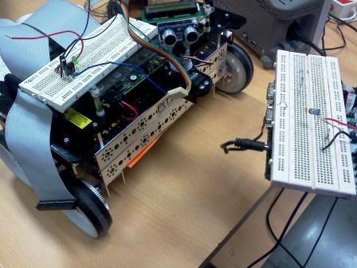

Electronics freak, hardware tinkerer, movie buff, android lover and blogger
Infrared controlled NI sbRIO robot using LabView
One of the highlights of the robotics course was that we had to work on LabView and deploy our code on sbRIO robot. This robot from National Instruments has a FPGA along with a processor and supports LAbView graphical programming.
We were given a task to control this robot wirelesly using Infrared. The foremost task was to learn LabView. After that, we made a receiver module containing TSOP1738 and connecting it to the FPGA on the robot. The transitter had a IR led connected to STK500. The IR led modulated the data sent to it by microcontroller at 38 KHz and send it to the receiver. For movement in different directions, differecnt code is sent via the STK500.
The receiver on the robot and the IR transmitter is shown below
Used National Instrument's sbRIO robot, LabView software, basic electronics and circuit designing.
